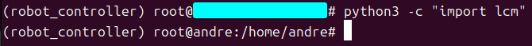
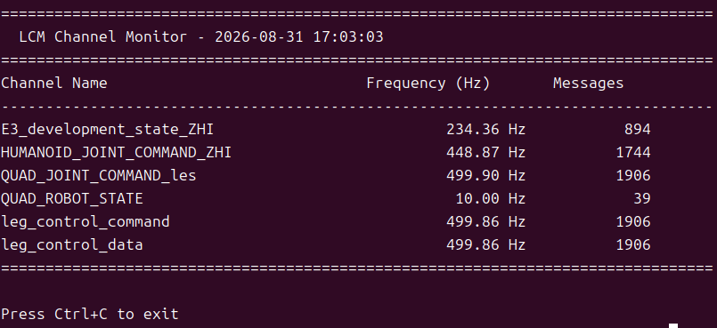

1.2 System Requirements¶
Purpose¶
This section describes the software and hardware environment required to run MuJoCo simulation, the hardware controller, the SDK, and external algorithms.
Recommended Environment¶
| Scenario | Recommended system | Architecture | Notes |
|---|---|---|---|
| Local simulation and development | Ubuntu 20.04 or later | x86_64 | Used for MuJoCo, SDK, and external-algorithm verification |
| E15 / RK3588 hardware side | Ubuntu 20.04 | aarch64 / arm64 | Uses bin_rk3588/ and lib_rk3588/ |
| Y15 / x86 hardware side | Ubuntu 16.04 | x86_64 | Uses bin/ and lib/ |
Software Dependencies¶
| Dependency | Purpose | Recommended installation |
|---|---|---|
| Conda / Python 3.8 | Simulation, LCM tools, external algorithms | bash scripts/setup_conda_env.sh |
| LCM | Controller, SDK, simulation, and external-algorithm communication | sudo apt-get install liblcm-dev or helper script |
| MuJoCo | Physics simulation and visualization | pip install mujoco==3.2.3 |
| ONNX Runtime | Run RL policy models | pip install onnxruntime |
| CMake / Make / GCC | Build controller and SDK | bash scripts/check_cmake_make_gcc.sh or system package manager |
First-Time Setup¶
Install Anaconda or Miniconda before running setup scripts: https://www.anaconda.com/products/distribution


After installation, create and activate the simulation/tool Conda environment robot_controller:
bash scripts/setup_conda_env.sh
conda activate robot_controller
If Python LCM bindings are missing, for example import lcm fails, install them:
bash scripts/install_python_lcm.sh
If multi-machine communication fails or local LCM messages cannot be received, configure LCM multicast/networking only when needed:
sudo bash scripts/setup_lcm_network.sh
Success Criteria¶
- In the
robot_controllerConda environment,python3 -c "import mujoco"exits without error.

- In the same environment,
python3 -c "import lcm"exits without error.

bash scripts/monitor_lcm.sh --no-guican start.

- C++ SDK examples can be built under
yobotics_sdk/build/.
Safety Note¶
Hardware operation depends on more than the software environment. Before running, also confirm the battery, emergency stop, IMU, SPI devices, network interface, multicast route, and configuration file against the actual site hardware.